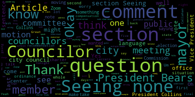
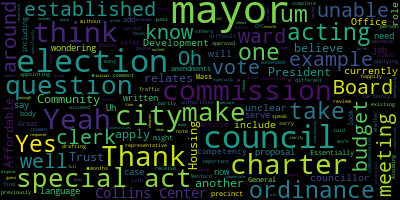
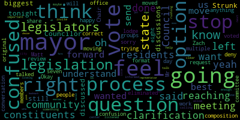
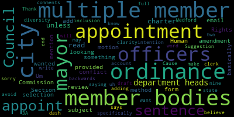

AI-generated transcript of Governance Committee Meeting via Zoom
English | español | português | 中国人 | kreyol ayisyen | tiếng việt | ខ្មែរ | русский | عربي | 한국인
Back to all transcripts
[Tseng]: Should I wait. Well, I was just wondering because the screen is full. Governance Committee, February 4 2025. Mr. Clerk, what can you please call the roll.
[Hurtubise]: President Bears.
[Bears]: President.
[Hurtubise]: Vice President Collins, Councilor Lazzaro, Councilor Scarpelli.
[Tseng]: chair saying presidents five presidents none absent. Councilor Callahan is also here with us tonight. Paper 24-468 resolution to discuss updates to the city charter. This is the second substantive meeting with us reviewing the Charter Study Committee's recommendations as we've received them from the mayor's office. More specifically, we will be discussing Article 3 about the Executive Branch, Article 5, Administrative Organization, Article 6, Financial Procedures, and Article 7 regarding elections tonight. I did receive some emails asking if we would be taking up compensation tonight. As per a motion from the last Governance Committee meeting, we will be taking that up at our next governance committee meeting. I believe that's February 19th at 6 p.m. I did respond to the emails I got about that, but I did want to make that announcement first. If there are no opening comments, I was thinking we could get straight into the content.
[Scarpelli]: With that being said, oh, Councilor Strunk. The biggest discussions that are still left out there is this won't be discussed tonight just for clarification would be the. The composition 2-1.
[Tseng]: Yes. 2-1, I know the committee made a few motions regarding that we adopted some amended language that was a compromise between President Bears' language and the language that we received. Although, I made a note with my vote and the committee made a note with a general motion that we wanted to leave that open for a committee, the whole meeting following our last governance committee meeting. with that being noted, moving on to article three.
[Scarpelli]: Oh yeah. I'm sorry. Yeah. I just, I just have clarification because I, I think that was the confusion, Matt, Mr. Chair, that, so again, you just confused me right there. So did we vote on anything?
[SPEAKER_00]: We voted seven.
[Scarpelli]: Are we doing the seven that Zach said? Are we, have we eliminated the option of, of at lodge for all eight? That's the question that people were very confused when they left the other day.
[Tseng]: So what we have voted on is a change to make it nine members in total, five at large, four representing districts. But we did also note that we wanted to hold a committee of the whole meeting for Councilors Callahan and Leming to be able to vote on the final version. And at that meeting, we can talk about edits to what we have. So we can talk about going back to the Charter Study Committee's recommendation. We can talk about other compromises, proposals that people might have.
[Scarpelli]: Okay, just to share with the Council. the conversation I've had with multiple community members and community groups with that. The question was, if this is voted, then moved on to the mayor's office, the mayor has the option to deny that and request the original format, correct? Or will that stop the process? because again, we're trying to work this so we can get this to the legislation, right? So our legislators that I've talked to aren't very happy that we're moving against what their constituents are reaching out to them about what we're doing here, what was done at that vote, and what was done with the review committee. So I think that that's going to be something we can talk to at that next meeting, but I want to be clear that residents feel like they're not informed enough to understand the process as we're rushing through this. And they want to know, is there a stop? So if they feel like they're not being listened to us, the question is, can the mayor, maybe the calling center can help us, can the mayor stop the process? If she doesn't feel that this is what is best for the city, she can not allow this to move forward to the legislation, right?
[Tseng]: Name and address for the record, please. Thanks. Thank you, Mr. Wright.
[Contreas]: Maryland Country is Collins Center.
[aHlZXhM2wEw_SPEAKER_16]: Thank you. In response to Councilor Scarpelli's question, the mayor must approve both the city council and the mayor must approve the version of the charter that is sent to legislature. If she does not approve the version sent to her by this body, then she can just simply veto it, or there may be some informal discussion to try to resolve that.
[Scarpelli]: that we invite all of our state legislators here because I think it's important because their constituents are reaching out to them because I know that one state representative sat down with me and wanted to miss the meeting. So he wanted to know what was going on. So he's a little confused. So if we can have that as a form of emotion, but if we could just put that as a, just a bookmark, just so that we understand that for the residents that are listening, what this council votes on and then moves forward, the mayor then has the option to say, uh, nope, we're not going to send this to the legislation legislators. We're not going to send this to the state for vote to get this on the ballot, or she can veto and pick what she feels is the best choice.
[aHlZXhM2wEw_SPEAKER_16]: That's correct. The only thing I would differentiate between other legislation is that there is no ability by this council to override a veto. Thank you. Okay.
[Tseng]: All right. That makes, thank you. I appreciate that. Any other comments before we move on to section 3-1? Seeing none. Okay. Section 3-1, mayor qualifications, term of office, compensation prohibitions. Does anyone have any comments, suggestions, remarks on this section? Seeing none. Oh, yes. Yes, 3-1. I believe it's on page 10 of the package. I'll give you a sec. Great. Section 3-2, executive powers, enforcement of ordinances. I see Councilor Collins, Vice President Collins.
[Collins]: Thank you. I had what may just be a clarifying question on section 3-2. In subsection C, it says the mayor shall be by virtue of the office a member of every multiple member body of the city. I was hoping to get a definition of what that would mean in practice from the Collins Center or representatives from the Charter Study Committee. Does that mean any board or commission? The mayor may have an informal say on or vote in if he or she chooses, or does it mean truly any multi-member body, including the City Council? I'm just, I'm not, I don't really know what to glean from that term.
[Tseng]: Let me make sure it's on. There we go.
[Contreas]: Okay. The City Council is separate from the definition of multiple member bodies. It would be like the Planning Board, the Zone Board of Appeals, Conservation Commission, the Horticultural District Commission, those kinds of things.
[Collins]: And the Mayor has a voice but no vote. A voice but no vote on any board or commission. Yeah, great, thank you, that's very helpful.
[Tseng]: Do we have any other comments from Councilors on Section 3-2? I had one question, just to ask if this is standard practice for city charters. I am not familiar that this is present practice in Medford. And I just wanted to ask if this is very standard.
[Contreas]: Oh, in terms of the being on boards, it does show up in the more recent charters.
[Tseng]: OK. And I guess one concern that I think some residents have brought up to me about this part is that there might be some commissions like, for example, the Human Rights Commission or the Disabilities Commission that are working on topics that are more sensitive and not that they're you know, trying to go against the city in any way, but they want to be, you know, members have expressed to me wanting to have some freedom in terms of how they, you know, talk about issues in those committees, talk about analyzing what's going on in City Hall policies, making policy recommendations. And there's some concern that having the mayor present might affect those discussions, the independence of those discussions.
[Contreas]: Oh, okay. You're afraid that the mayor may stifle?
[Tseng]: There's some concern. Could we speak to that?
[Contreas]: I really can't speak to that. I haven't heard of that.
[Tseng]: Okay.
[Contreas]: I mean, in my experience with this, which is very limited, the mayor doesn't show up all that often.
[aHlZXhM2wEw_SPEAKER_16]: Okay. To the extent... There may be a conflict of interest between the mayor and any agenda item at any particular meeting of such a board of commission. The mayor would be subject to the state ethics clause and would be expected to avoid any conflicts of interest.
[Tseng]: Okay, I think, as for the mayor and the conflict of interest, the state ethics law and the mayor, I'm not as familiar. Say that there's a situation where, for example, water and sewer might be making a recommendation when it comes to setting rates. Is that something theoretically that the mayor would then be barred from that conversation?
[aHlZXhM2wEw_SPEAKER_16]: Under this particular section?
[Tseng]: Under this section and the state ethics laws.
[aHlZXhM2wEw_SPEAKER_16]: No, the mayor would be able to have a voice, but not a vote. It's not part of the Water and Soil Commission.
[Tseng]: Okay. I just wanted to understand the section better. I have no recommendations for motions of this body to make, but I just wanted to ask those questions. Section, do any other councillors have anything, any questions or comments on section 3-2? Seeing none. Okay, moving on. Section 3-3 appointments to the mayor. Do any councillors have, I see Councilor Lazzaro.
[Lazzaro]: Thank you. Section 3-3A mentions all city officers and department heads and the members of multiple member bodies for whom no other method of appointment or selection is provided by the charter. The mayor shall appoint Council. Mayor shall appoint. All city officers and department heads and the members of the multiple member bodies. Um this, uh, I just wanted to mention that the Human Rights Commission has, um. An ordinance in draft form. I Suggestion that we add the word or ordinance at the end of that sentence. So I'd like to state that in the form of an ordinance, just to make an amendment to that sentence. Do you want me to email that to you?
[Tseng]: Okay, yes. Yes, President Bears. Well, let me... Give me a sec.
[Bears]: Oh, I said second. I can happily join the queue. I do have another comment on that.
[Lazzaro]: I believe do councils are do you have any more comments or that's all I just wanted to motion to add the it that unless It just says, sorry, I'll read it out. I'll read it out again for clarity. Cause I basically read the sentence backwards. The mayor shall appoint subject to the review of such appointments by the city council under section two dash nine, all city officers and department heads and the members of multiple member bodies for whom no other method of appointment or selection is provided by the charter or ordinance is the amendment. So it's basically saying the mayor appoints subject to the review by City Council, all city officers and department heads and the members of multiple member bodies, unless that is in conflict with something in the charter. And I'm just adding unless that's in conflict with something in an ordinance, specifically because of the Human Rights Commission in Medford, that may be looking to avoid, you know, just looking to account for diversity and inclusion in the appointment of multiple member bodies. So that's the intention of this motion, but I will write out that full sentence and email that to the clerk.
[Tseng]: I think to give a little bit of background, the Human Rights Commission is currently exploring a reform to its enabling ordinance. The draft ordinance is in the Resident Services and Public Engagement Committee right now. I'm helping with that effort so I can speak a little bit more to it. Part of the idea is that you would have some appointments that come from other commissions, for example, the Disabilities Commission or future commissions that might be pertinent to the HRC's work. And there's also a suggestion from in the draft and from former members of the HRC that the City Council have some role in appointing members to the HRC as well. And so that's to give background to what Councilor Lazzaro is saying. And her amendment would be to add the words, ordinance after that first sentence, basically saying in the mayor chooses, mayor gets to appoint members of the multiple member board. multiple member boards, um, except if there are other exceptions made in the city charter or by ordinance. Um, that's just the, to explain what, um, Councilor Lazzaro is saying. Uh, President, President Bears was in the queue next.
[Bears]: Thank you. Yeah, I would also note that, um, there are a number of existing boards and commissions established by ordinance that have appointing authorities from multiple different bodies, the Affordable Housing Trust, I believe, well, not the Affordable Housing Trust, sorry, the CPC, and some others as well. So I think it's important to have that in there. But I did have one question, which is just as relates to by charter or ordinance. Could the Collins Center representative speak to whether by charter includes, if this were to pass, Other special acts that apply to the city of Menford, for example, the Traffic Commission is established by special act. I believe the Community Development Board is at least partly established by special act. Certainly the Office of Community Development is. So does by charter also include special acts previously applying to the city before the assumed approval of this charter?
[Tseng]: Did the folks from the call-in center hear the question? the whole thing.
[Contreas]: Yeah, I think I got the gist of it. Okay, got it.
[Tseng]: If you need clarification, I'll just, I'll ask President Barrows again.
[Contreas]: Usually a charter includes special acts that are retained and those that are repealed. And I think that section of this charter is not complete yet, but if it's mentioned in the charter, if the traffic commission was created by special act and we put in the charter that the special act is retained, you know, that section would apply.
[Tseng]: President Bears, does that answer your question?
[Bears]: Well, it spawns many other questions. When will that be complete? And when will we review it? And is the council on the hook for drafting that? And does the Collins Center have a list of special acts that currently apply to the city?
[Contreas]: We will probably have it when you discuss article nine.
[Tseng]: President Bears, do you have any follow up questions? Nope, that's good.
[Bears]: Thank you.
[Tseng]: Thank you, President Bears. Does the call center have anything to add when it comes to the discussion about adding the words by ordinance into that sentence? Or is there... Okay, I'm seeing a shaking. I know Councilor Lazzaro has a motion. Do we have a second on that motion? Oh, the person has seconded. Are there any comments from members of the public? Because we are taking a vote. Seeing none, Mr. Clerk, when you're ready.
[Hurtubise]: President Bears.
[Bears]: Yes.
[Hurtubise]: Vice President Collins. Yes. Councilor Lazzaro. Yes. Councilor Scarpelli. Yes. Chair Tseng.
[Tseng]: Yes, four in the affirmative, one in the negative, motion passes. Are there any other comments on this section, section 3-3 before we move on? Seeing none. Okay. Are there any comments on section 3-4, removal or suspension of certain officials? Seeing none, are there any questions, comments, motions on section 3-5, temporary appointments to city offices? I don't see any from councillors. I did have one thing I just wanted to ask slash note. the section 3-5b about temporary appointments, extensions, is there any worry that this would hamstring us if we can't find a permanent or replacement after the extension? The extension says it's basically 120 days about a four-month extension after the temporary appointment of 180 days, which is about six months.
[Contreas]: 300 days.
[Tseng]: Oh, 300 days, yeah. I know there's some department head positions here that have, there's one that's been very widely talked about, the city solicitor role, which has been, We haven't been able to find any qualified applicants for that for years now. Is there a worry that there might be something, a legal challenge that comes up there or a problem when it comes to getting someone to do that job?
[aHlZXhM2wEw_SPEAKER_16]: Is there someone temporarily filling the position?
[Tseng]: So right now we have KP law on retainer. So the mayor's office has a legal opinion saying that they can step in as our city solicitor. But this question is applicable to different departments as well.
[aHlZXhM2wEw_SPEAKER_16]: I don't think I don't see this as applying to KP law because I would be a contract between the city and a private firm to provide the city with legal services. If you're talking about appointing somebody as acting. and you get to 300 days, then I suppose there may be a question, but it would seem at that point, perhaps the city would want to move one way or the other with regards to that person.
[Tseng]: Okay, understood. Are there any other comments from councillors or members of the public on section 3-5, temporary appointments to city offices? Seeing none, okay. Section 3-6, communication special meetings. Are there any comments from councillors or members of the public? Or councillors first, I guess. Vice President Collins, you're live.
[Collins]: Thank you, Chair Sung. This again might be a comment or it might just be a clarifying question. In section 3-6, let me check the subsection number, subsection B. It reads, the mayor may call a special meeting of the city council for any purpose. I was just hoping to understand better like how this what this maybe tracked with most from our current charter right now, there's a provision for special meetings to be called for the city council when it's necessary. It can be done by a quorum of city Councilors or by the president of the city council, but I don't believe that we currently have it in practice for the mayor to be able to call a special meeting of the city council. So I'd like to understand a little bit more about the rationale behind that. So I can understand if I the reasoning for it being written into the city charter that that's a new power of mayor.
[Tseng]: Is that something the Collins Center could speak to? Sure.
[Contreas]: It's pretty standard in charters because mayors may have information or be presented with an emergency or other situation that consultation with the council is needed.
[Tseng]: Vice President Collins, does that satisfy your question?
[Collins]: Yeah, thank you. It makes sense is the rationale it's I think that there's going through this project, obviously, some stipulations are more major more consequential than others. I think some of my deliberations around the charter around which of those things are consequential that we should change and which of those things. are strategies that we want available to the mayor, the city council, other bodies, but don't necessarily need to be written into the charter. So this just strikes me as kind of a shift in the dynamic, potentially a symptom of a shifting dynamic. In the past, I think that the mayor has always been able to collaborate with city leadership when there's an emergency meeting that needs to be called. Again, I don't think that this is the most important thing before us. But it did strike me as a change and a new power of the mayor over the city council. So it's just something that I want to give due consideration to and think a bit more about.
[Tseng]: Thank you, Vice President Collins. Are there any other comments? Seeing none, any comments from the public? Seeing none as well. Moving on to section 3-7, approval of city mayor veto. Are there any comments from councilors on this point? Seeing, oh. Thanks for catching that. Councilor Callahan.
[Callahan]: Thank you. This is a little bit more of a general question about this whole section. And I just, I do have a question for the chair of the study committee who I so appreciate being here in person. I didn't see any survey questions about strong mayor versus weak mayor or about the strength of the mayor. My understanding is we have one of the strongest mayoral sort of systems in the whole state. and country. And I'm just curious if there was discussion among the community that you heard how much of the, you know, whether this. was talked about on the commission. And specifically, I'm really talking about appointments, both department heads, as well as boards of commissions, the budget. And it just comes up in here because of the ability of the mayor to veto you know, anything coming out of the City Council. So I'm just curious kind of how the sort of strong Mayor Week Mayor fit into the discussions both internally within the committee as well as more broadly within the public.
[Tseng]: Chair McDonald, name and address for the record, please.
[Milva McDonald]: Mildred McDonald, 61 Monument Street. Thank you for the question. Strong mayor, weak mayor is terms that get thrown around a lot, but we basically have a mayor council form of government. And we did look at balance of power, and we had also heard talk around town about Medford having an inordinately powerful mayor. So we asked the Collins Center for an analysis. and they provided an analysis, which is in the final report, and you can see that Medford's mayor is in line with other mayors in the state. Our mayor does not have more power than other mayors in the state. But we did talk about balance of power when we looked at a lot of different things, and we talked about it with the budget. It was a consideration.
[Tseng]: Councilor Callahan, do you have any more questions or?
[Unidentified]: No, thanks.
[Tseng]: Okay. Are there any other comments on section 3-7? Seeing none. Any other comments from members of the public? Seeing none. Section 3-8, temporary absence of the mayor. Do any councillors have any questions about this section? Seeing none from councillors.
[Bears]: Oh, just one question. Assuming an extended absence, would the acting mayor I just think I would find it very difficult for any councillor to take on the role of acting mayor for months without, would that person receive the compensation of the mayor? It's just unclear to me how that would work, especially given that councillors have other jobs.
[Tseng]: And would like- Is that a question for discussion or a question for the call center?
[Bears]: Oh, I mean, I don't have a proposal. I'm just wondering how, how has this worked in other communities? You know, it seems like an acting mayor coming from the council would have to take a leave from their full time job to fulfill that role. How would they be compensated?
[Tseng]: Understood. Okay. Would the folks from the Collins Center have a response or examples of different cities where someone might've stepped in as an acting mayor and how the compensation would work in that situation?
[Contreas]: This is a standard provision. The premise behind it is that someone elected by the voters of the city should serve as the mayor. is the absence of the mayor.
[Tseng]: I have a quick follow-up question for that. Would it then make sense then in the compensation section in somewhere in this charter to note that if someone is serving, if a Councilor is serving as acting mayor, they should be compensated for that work, for that full-time work?
[Contreas]: This is for temporary absence, so. That would be up to you.
[Tseng]: Okay. I note that as something the council might want to take up when we talk about compensation at the next governance committee meeting. President Bears, do you have any more questions?
[Bears]: Yeah, I guess just as written now, what would you say that this charter would compensate an acting mayor who is a member of the council?
[Tseng]: Um, could do the folks from the call center have a have a response to that question?
[Bears]: No. Uh, there's no response to that question. Okay, so yeah, I think we need to clarify what that is, if it's unclear in the language as written.
[Tseng]: Yeah, I think that's an important note. Thank you, President Ferris. Um, do you have any more questions or comments?
[Bears]: All set. Thank you.
[Tseng]: Thank you. Um, I had a quick question or two about logistics technicalities. The first one is just statutory or charter language. When it comes to that last sentence in part A, the mayor may at any point declare themselves able to perform the duties of office. I think I understand where that applies, but because that's put at the very end of the paragraph, I do have some worries that it might be, you know, it might be, there might be a situation where the city council by unanimous vote does determine that the mayor is unable to serve. And then the mayor argues that that sentence should apply to the whole paragraph and says just unilaterally declares themselves mayor. I think, is there, is that a, Is that a worry that we should have? And is there a clarifying language we could have put in there about this?
[Contreas]: I'm not thinking of any offhand. This is pretty, this is standard. This is person's on vacation, person has an operation, person has to leave town because something happened to a relative out of state, you know, that's what these things are for.
[aHlZXhM2wEw_SPEAKER_16]: And it's actually become less and less of an issue with technology being the way it has developed over the last few decades where you can be anywhere in the world and still participate by Zoom or
[Tseng]: If that is the intention then of language like this, is there a worry or is there any worry that a city council could, you know, a future city council could abuse the language written here? And, you know, you know, if they don't like the mayor and everyone on the city council doesn't like whoever the mayor is, votes to... Oh, well, I think you're headed to court then.
[Unidentified]: Yeah.
[Tseng]: Okay. I see Councilor, Vice President Collins
[Collins]: Thank you chair saying I appreciate you bringing that up it was something that I had highlighted in my initial read, and the last sentence as you noted and just, again, you know, doing us as, as we have to do reading this with a fine tooth comb kind of looking for areas where there could potentially be confusion, totally heard that I think with a lot of with many of the issues that we're bringing know, it's unlikely that these things would ever be issues, but you know, it is, in a way, our responsibility to look for things that could be so we can make this document as airtight as it can be. So I just I flagged that as well. I'm glad you brought it up. And I think that if there's a way to kind of maintain the purpose of this article and make sure that you know, we're not leaving a stone unturned with if there's a more straightforward way of organizing this paragraph that it doesn't there is no arbitrariness in how it could be, or there's no flexibility in how it could be read, I would be happy to consider that language at a future meeting. Maybe it won't end up changing, but in my initial read of it, I did read this paragraph, and at the end, I was like, in what condition may the mayor declare themselves able, and how does that interplay with the city council's unanimous vote mentioned earlier. So if there's no further clarification that's needed, that's great. But I would be interested in having this further clarified if possible.
[Tseng]: Thank you, Vice President Collins. I see President Bears is on Zoom.
[Bears]: Thanks. Yeah, I have the same initial question. And I thought about it for a minute. And I think this is specifically for a case or example where the mayor is unable to declare themselves unable to serve. For example, if a mayor was in an accident and was unconscious, the council could make that vote. I don't think it's intended to sit at the, you know, if the council has a dispute over the mayor's competency and chooses to vote unanimously to remove the mayor, And the mayor is of not enough mind to write and sign a letter saying that they do have the competency to serve as mayor. I think it solves for that. Essentially, the council couldn't abuse the power because the mayor could immediately reinstate themselves. But in a situation where the mayor is unable to recuse themselves from the office, because of some sort of unexpected event that in that case, it would allow the council to take such a vote.
[Tseng]: Thank you, President Bears. I think that's how I think I do read it that way, too. But I just statutory interpretation is something that is, you know, shifting a lot these days, going back and forth a lot these days. So I think that's why I wanted to flag it. And I think, you know, councillors can dwell on this. We can take this back up at the committee, the whole meeting as well, if needed, if any councillors feel is needed. President Bears, is your hand raised from before or do you have anything else? Okay, great. Do any other Councilors have questions on Section 3-8? Seeing none, do any members of the public have any comments or questions on Section 3-8? Seeing none as well, okay. Oh, I did have one more question for this section. In part B, this was just a clarifying question, where a member of the city council is serving as acting mayor. Let's say that that member of the city council is the president of the city council. The last sentence is clear that they shouldn't vote as a member of the city council. can they still preside over that meeting? Or is the only power that's carved out the voting power?
[Contreas]: Well, you do have a vice president, so there wouldn't be a need for him for them to oversee the meeting.
[Tseng]: So it would be expected that the vice president would take over? Yeah. OK.
[aHlZXhM2wEw_SPEAKER_16]: You cannot participate. When you're holding a position as the executive, as a member of the legislative body, so you'd have to recuse yourself effectively from any participation, other than perhaps speaking, you know, as a member of the public might, or other elected official might, but not as a member of the city.
[Tseng]: I think that makes a lot of sense to me. That's not entirely clear from the language in the charter itself. Is this language that we have in front of us standard for different cities?
[aHlZXhM2wEw_SPEAKER_16]: Yes.
[Tseng]: Okay. I guess one more question that just popped into my mind when it comes to You guys mentioned that in a situation where this council is maybe abusing its power and the mayor comes back and says, that's what's happening, that might be litigated. Is there any precedent for that?
[Contreas]: I think there is. But I can't recall it.
[Tseng]: Thank you.
[Contreas]: It's old.
[Tseng]: With that being said, those are my final thoughts on section 3-8. Are there any other thoughts on 3-8 before we move on to 3-9? Seeing none. Okay. Section 3-9, delegation of authority by the mayor. Do any councilors have any questions on this section, questions or comments? Seeing none. Section 3-10, vacancy in the office of the mayor. Do any Councilors have questions or comments on this section? Seeing none. Do any members of the public have any comments on this section or Article 3 about the mayor's office, the executive branch? Seeing none, I did have a really quick question with regards to section 3-2. I forgot this in the moment. It relates back to Councilor Collins's point about the mayor being a member of every multiple member body of the city. I think the following sentences are very clear on what the mayor's role is when it comes to multiple member bodies. I'm wondering if there is any worry that the first sentence, just by saying a member instead of saying an ex-official member, if there's any statutory interpretation problem there. I know it's evident in the second sentence, but I could see a court arguing that because we didn't put it in the first sentence, that signals some other intent.
[Contreas]: I don't see it. Okay, fine. We don't see it as problematic.
[Tseng]: Understood. Thank you. Now, I'm seeing that there are no hands up, no requests to speak. Moving on to section five, article five. administrative organization. Do any Councilors have questions about Section 5-1 about the organization of city agencies? Seeing none. Do Councilors have questions? Oh, yes, Vice President Collins.
[Collins]: Sorry about that. It took me a second to find my notes. Again, sorry, another clarifying question for me. We're in Section 5-1 yes great. I was just hoping. If any examples could be given of the section that describes. This procedure where the mayor prepares and submits to the city council plan in the city that council then holds a hearing on it and it seems like there's a vote and this is obviously I'm trying to compare this to what we're familiar with. We're familiar with ordinances being promulgated by the city council and petitions and papers coming from the community via the mayor's office and city administration to the council. I'm trying to figure out if this describes something different. Is this like, is this a mechanism by which the mayor is proposing an ordinance, a new department, like a change to administration? Like when we say that the mayor is proposing a plan to the city council and then the city council may take a vote to disapprove of that plan. Could you give an example of what that might be about?
[aHlZXhM2wEw_SPEAKER_16]: Perhaps the easiest way to see what the intent of this is, is to look at the administrative codes of Chelsea or Melrose or Bonsable, the three that come to mind. The intent is really to describe in very general terms, the, function of the various administrative departments. boards and commissions. So, but to the extent you want an example might be helpful. Again, I'd refer you to Chelsea, Bostonville, Melrose. They all have administrative codes that are fairly easy to pull up and look at. So.
[Tseng]: Councilor Collins, does that satisfy your question? Well, it directs me to where I should look to get a concrete answer, so thank you for that. Thank you. Do any other councillors have questions or comments on section 5-1? Seeing none, do any councillors have questions about section 5-2, Merit Principles? Seeing none, do any members of the public have any comments on article five on administrative organization? Seeing none. Then moving on, article six, financial procedures. Do any councilors have questions or comments on section 6-1 fiscal year? Seeing none, do any councilors have questions or comments on section 6-2, the annual budget meeting? Seeing none, do any councilors have questions? Yes, Councilor Callahan.
[Callahan]: Thanks, I didn't mean to interrupt you. Just a super quick question about we did pass a budget ordinance and I know that the charter basically is a that takes precedence over ordinances in general. I'm curious how you might see this piece of the charter and the ordinance that we passed as interacting with each other. I mean, you may not know about the ordinance. The ordinance basically lays out a timeline for when the mayor will provide certain information and different meetings that the state council will have with department heads to understand their individual budgets. So it has this more details, and I don't really know if the actual dates are probably not identical to these, but I'm just curious if you have an understanding of how that, would that ordinance kind of be washed away or would that ordinance just be assumed to be fine unless it's specifically against the charter?
[Contreas]: Well, the ordinance would have to be brought into harmony with the charter.
[Tseng]: Okay. I see that President Bears has his hand raised on Zoom.
[Bears]: Yeah, as I read it, we would, this would add a budget meeting earlier than we have in the ordinance as it stands now. And it looks like it might make some small changes to the timelines that we're currently complying with. Chapter 43 or 44, Mass General, I can never remember which one, but we might just need to make some adjustments around the beginning and the end to make sure the dates are in line. But other than that, it doesn't really affect the heart of the budget ordinance around the budget meetings. Thank you, President Bears.
[Tseng]: Are there any other questions or comments from councillors? Seeing none. Section 6-3, submission of operating budget message. Do any councillors have questions or comments on that? Seeing none. Section 6-4, action on the operating budget. Do any Councilors have questions or comments on this section? Seeing none. Section 6-5, capital improvement plan. Do any Councilors have questions or comments on this section? Seeing none. Section 6-6, Independent Audit. Do any Councilors have any questions or comments on this section? None? See, we can do things pretty quickly here. Section 6-7, Expenditures and Excess Appropriations. Any Councilors have questions or comments on this section? Seeing none. Okay. Do any members of the public have any questions or comments about Article 6, the financial procedures? I see a hand from Barry Ingber on Zoom. Name and address for the record, please, once we get you unmuted.
[SPEAKER_00]: Barry Ingber, 9 Draper Street. And just very briefly, I'm one of those who perceives a huge imbalance in power between the mayor and the council. And even if it's typical for the mayor council form of government in Medford, it's still a serious imbalance that I think has historically led to decades of conflict between city council and the mayor's office, regardless of who sits in those chairs. I think that one important way of addressing that imbalance would be to give the city council more discretion over the budget by allowing it to create or increase budget lines. I'm not sure what the legal parameters around that would be, but I would ask that both the council and the administration consider that. Thank you.
[Tseng]: Thank you, Barry. Going in person, name and address for the record, please.
[Matthew Page-Lieberman]: Matthew Page Lieberman, 15 Canal Street. I saw that it's a recommendation in the Charter Review Group's document that this be considered in the next Charter Review. However, I do feel that it is very unfortunate that participatory budgeting was not included at this iteration.
[Tseng]: Thank you, Matthew. Seeing no other comments in person or on Zoom, moving on to our last section of the night, article seven, our last article of the night, elections. Do any councilors have, let's take the, we can take sections seven-one and seven-two together since they're both about preliminary elections and preliminary election procedures. Do we have any comments? I see President Bears is on Zoom.
[Bears]: Thank you. I just had one, uh, follow up from our last meeting, which was, um, regarding the language around, including elections commission versus city clerk. Um, since we use the election commission model, um, but I also know that the mass general law that we adopted to move to the elections commission. Essentially says that the election commissions culture of the function of the city clerk as it relates to election. And I was wondering if the Collins Center had had a chance to take a look at that and figure out how we should refer to our elections oversight body, the body that conducts elections here in Medford in the charter.
[Tseng]: Would the Collins Center have an answer to that question?
[Contreas]: We would change the reference to the Board of Election Commissioners.
[Bears]: Great, then I would make a motion to replace the word City Clerk with Board of Election Commissioners throughout Article 7.
[Tseng]: We have a motion from President Bears to change the references to the City Clerk in Article 7 to Board of Election Commissioners, with a second from Councilor Lazzaro. Do we have any comments on that before we take a vote? Seeing none, when you're ready. Yes, yeah.
[Hurtubise]: Ready.
[Bears]: Great.
[Hurtubise]: President Bears?
[Bears]: Yes.
[Hurtubise]: Vice President Collins? Yes. Councilor Lazzaro? Yes. Councilor Scarpelli? Yes. Chair Tseng?
[Tseng]: Yes. Four in favor, one against. Motion passes. or do we have any other comments on sections 7-1 and 7-2 about preliminary elections? Seeing none, do we have any comments or questions about section 7-3 or section 7-4? That would be regular city election, ballot position, and for that regular city election. Seeing none as well. Moving on to section 7-5, nonpartisan elections. Are there any comments or questions from councilors? Seeing none. Section 7-6, wards. Do we have any comments or questions from councilors? Seeing none, I did have one question. Having followed the last re-precincting conversation in 2020, I believe it was, in the City Council, I know two of the plans submitted by, I believe it was the City Clerk's Office, had nine wards instead of eight. Now, a lot of, you know, a lot of this I think like affects potential composition of city council and, you know, there's a lot of interplay there. I was wondering how difficult it would be, you know, if we get to a situation with our very fast population growth here in Medford, where mathematically because of state laws, we have to draw nine wards or we get to a situation where you know we're kind of put in that position, how difficult would it be to change this.
[Contreas]: Oh, you could just bring a special act of the legislature to change the number. And is that something that it wouldn't, it wouldn't be a major undertaking.
[Tseng]: That's something that the state legislature would probably be pretty deferential to.
[Contreas]: Well, they do understand it because they're elected from these wards too.
[Tseng]: Okay, great. I see President Bears on Zoom.
[Bears]: Yeah, the other option would just be to request from the Secretary of the Commonwealth a map that adds an additional precinct within each ward. We had a proposal that kept us at eight wards, but added a third precinct in each ward. So that would just be another way to do it.
[Tseng]: Thank you, President Bears. Great. Are there any other questions from councillors on 7-6 on wards? Seeing none. And our final section of the night. Do you have any questions or comments from Councilors on section 7-7 application of state general laws? Seeing none, before we close the meeting, I want to open up. Oh yes, President Bears.
[Bears]: I just moved to refer the articles discussed tonight with the amendments voted on by the council to committee of the whole.
[Tseng]: Thank you, President Bears. We have a motion from President Bears to refer the articles we discussed tonight to the committee, the future committee of the whole that's going to be scheduled. Do we have a second on that motion?
[Bears]: Including the amendments.
[Tseng]: Including the amendments. Great. Do we have any, before we take out that vote, which I assume will be the last substantive vote, do we have any comments from the public about Section 7 elections or general comments about the sections that we discussed tonight?
[Matthew Page-Lieberman]: Some of these sections are very difficult to parse. And I'm wondering if anybody can take an opportunity to just clarify them a little bit. I think that we should really, people should look before approving this, ask if they can really break it down and explain some of these, you know, just because if people don't understand, you're making it very difficult for those to administer it.
[Tseng]: Thank you, Matt. I think, you know, this is something that Councilors could maybe work on too, in terms of our summaries, conversations with residents. I know there are Councilors who are more active on social media as well. Perhaps, you know, we can kind of break down some of what is in here for our residents to understand. Thank you. With that being said, If you know further public comment, Mr. Clerk, when you're ready. President Bears.
[Bears]: Yes.
[Hurtubise]: Vice President Collins. Yes. Councilor Lazzaro. Yes. Councilor Scarpelli. No. Chair Tseng.
[Tseng]: Yes. Four in favor, one opposed, motion passes. Do we have any last final comments or final motions from Councilors? Motion to adjourn. We have a motion to adjourn from President Bears. We have a second from Councilor Lazzaro. I see Councilor or Vice President Collins.
[Collins]: Thank you. I just, before we close out, I just want to thank the representatives from the Collins Center for being here. And again, thank you to the representatives from the Charter Study Committee for being with us through this process.
[Tseng]: Yeah, I'd like to echo that sentiment. Thank you to the Collins Center's representatives for being here. Thank you to the members of the Charter Study Committee, both here in person and on Zoom, for participating, for being here. With that being said, I think that's a happy place to close this meeting. Mr. Clerk, when you're ready.
[Hurtubise]: President Bears.
[Bears]: Yes.
[Hurtubise]: Vice President Collins, Councilor Lazzaro, Councilor Scarpelli, Chair Tseng.
[Tseng]: Yes, four in favor, one opposed motion passes meeting is adjourned.
Tseng
total time: 28.22 minutes
total words: 3455

|
Bears
total time: 5.43 minutes
total words: 868

|
Scarpelli
total time: 2.67 minutes
total words: 466

|
Collins
total time: 4.94 minutes
total words: 975

|
Lazzaro
total time: 2.45 minutes
total words: 320

|
Callahan
total time: 2.18 minutes
total words: 334
|
|
|
|
|
|
|
|
|
|
|
|
|
Back to all transcripts
{kind=link}
{kind=link}
{kind=link}
{kind=link}
{kind=link}